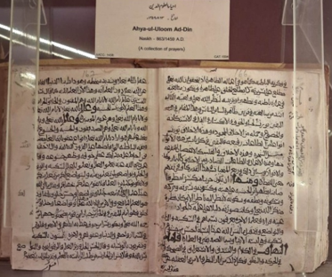

Audio Explanation:
Audio for selected language is not available.
ইদুইয়া উলূম আল-দীন

ধর্মীয় জ্ঞানের পুনর্জাগরণ (ইমাম আল-গাজ্জালি)
‘ইহইয়া উলূম আল-দীন’, যার অর্থ ‘ধর্মীয় জ্ঞানের পুনর্জাগরণ’, ইমাম আবু হামিদ মুহাম্মদ আল-গাজ্জালির সর্বাধিক প্রসিদ্ধ রচনাগুলোর একটি। আরবি ভাষায় রচিত এই বিশাল বিশ্বকোষধর্মী গ্রন্থের মূল উদ্দেশ্য ছিল এমন এক সময়ে ইসলামের আধ্যাত্মিক ও নৈতিক চেতনাকে পুনর্জাগরিত করা, যখন ধর্মীয় অনুশীলন অনেকাংশে আনুষ্ঠানিকতা ও বাহ্যিক আচারের মধ্যে সীমাবদ্ধ হয়ে পড়েছিল। গ্রন্থটি মোট চারটি প্রধান ভাগে বিভক্ত এবং প্রতিটি ভাগে রয়েছে দশটি করে গ্রন্থ। অর্থাৎ, সমগ্র গ্রন্থে মোট ৪০টি গ্রন্থ রয়েছে। এই চারটি প্রধান ভাগ হলো— ১. ইবাদত বা উপাসনা — ‘ইবাদাত’ ২. সামাজিক রীতিনীতি ও আচার-ব্যবহার — ‘আদাত’ ৩. ধ্বংসাত্মক দোষ ও প্রবৃত্তি — ‘মুহলিকাত’ ৪. মুক্তিদায়ক গুণাবলি — ‘মুনজিয়াত’ আল-গাজ্জালি এই গ্রন্থে কোরআন, হাদিস, ইসলামী আইনশাস্ত্র, ধর্মতত্ত্ব এবং সুফি আধ্যাত্মিকতা—এই বিভিন্ন জ্ঞানধারাকে অত্যন্ত দক্ষতার সঙ্গে সমন্বিত করেছেন। মুসলিম বিশ্বের পণ্ডিত, সাধক এবং নৈতিক ও আধ্যাত্মিক সংস্কারের অন্বেষীদের কাছে এই গ্রন্থ একটি মৌলিক ও প্রভাবশালী রচনা হিসেবে বিবেচিত হয়ে আসছে। এই পাণ্ডুলিপিটি নাসখ লিপিতে লেখা এবং এর তারিখ ৮৬৩ হিজরি, অর্থাৎ ১৪৫৯ খ্রিস্টাব্দ।
Ihaya al-Uloom al-Deen
The Revival of the Religious Sciences
Ihaya al-Uloom al-Deen, meaning “The Revival of the Religious Sciences”, is the most celebrated work of Imam Abu Hamid Muhammad al-Ghazali. Composed in Arabic, this monumental encyclopaedic treatise was written to revive the spiritual and moral essence of Islam at a time when religious practice had become largely formal and outward. The work is divided into four quarters each containing ten books a total of 40 books. 1. Acts of Worship (Ibadat) 2. Social Customs (Adat) 3. Destructive Vices (Muhlikat) 4. Saving Virtues (Munhiyat). Al-Ghazali masterfully combines Quran, Hadith, Jurisprudence, Theology, and Sufic spirituality. A foundational text for scholars, mystics, and seekers of ethical and spiritual reform across the Muslim world. Written in Naskh in 863 Hijri 1459 A.D.
ഇഹ്യാ ഉലൂം അദ്-ദീൻ
മതവിജ്ഞാനങ്ങളുടെ പുനരുജ്ജീവനം (ഇമാം അൽ-ഗസാലി)
അറബി ഭാഷയിൽ രചിക്കപ്പെട്ട പ്രശസ്തനായ പണ്ഡിതൻ ഇമാം അബു ഹാമിദ് മുഹമ്മദ് അൽ-ഗസാലിയുടെ ഏറ്റവും പ്രമുഖമായ കൃതിയാണ് 'ഇഹ്യാ ഉലൂം അദ്-ദീൻ' ( മതവിജ്ഞാനങ്ങളുടെ പുനരുജ്ജീവനം). മതാചാരങ്ങൾ വലിയൊരു ഭാഗം വെറും ബാഹ്യമായ ചടങ്ങുകളായി മാറിയ ഒരു കാലഘട്ടത്തിൽ, ഇസ്ലാമിന്റെ ആത്മീയവും ധാർമ്മികവുമായ സത്തയെ പുനരുജ്ജീവിപ്പിക്കുക എന്ന ലക്ഷ്യത്തോടെയാണ് ഈ ബൃഹത്തായ വിജ്ഞാനകോശ ഗ്രന്ഥം രചിക്കപ്പെട്ടത്. ആകെ 40 പുസ്തകങ്ങളുള്ള ഈ കൃതി ഓരോന്നിലും പത്ത് പുസ്തകങ്ങൾ വീതമുള്ള നാല് ഭാഗങ്ങളായി തിരിച്ചിരിക്കുന്നു: 1. ആരാധനാകർമ്മങ്ങൾ (ഇബാദാത്ത്), 2. സാമൂഹിക ആചാരങ്ങൾ (ആദാത്ത്), 3. വിനാശകരമായ തിന്മകൾ (മുഹ്ലികാത്ത്), 4. രക്ഷ നൽകുന്ന സൽഗുണങ്ങൾ (മുൻജിയാത്ത്). ഖുർആൻ, ഹദീഥ്, കർമ്മശാസ്ത്രം, വേദശാസ്ത്രം, സൂഫി ആത്മീയത എന്നിവയെ വിദഗ്ധമായി സമന്വയിപ്പിച്ചിരിക്കുന്ന ഈ ഗ്രന്ഥം, മുസ്ലിം ലോകത്തെ പണ്ഡിതന്മാർക്കും ആത്മീയ സാധകർക്കും ധാർമ്മിക-ആത്മീയ നവീകരണം തേടുന്നവർക്കും ഒരു അടിത്തറയായ ഗ്രന്ഥമാണ്. 863 ഹിജ്റ - ക്രി.വ. 1459-ൽ നസ്ഖ് ലിപിയിലാണ് ഇത് എഴുതപ്പെട്ടിട്ടുള്ളത്.
احیاء علوم الدین
مذہبی علوم کی تجدید (امام الغزالی)
احیاء علوم الدین، جس کے معنی مذہبی علوم کی تجدید ہیں، امام ابو حامد محمد الغزالی کی مشہور تصنیف ہے۔ عربی زبان میں لکھی گئی یہ جامع کتاب ایسے دور میں اسلامی تعلیمات کی روح اور اخلاقی اقدار کو اجاگر کرنے کے لیے لکھی گئی تھی، جب مذہبی عمل بڑی حد تک رسمی اور ظاہری صورت اختیار کر چکا تھا۔ یہ کتاب چار حصوں میں تقسیم ہے اور ہر حصے میں دس کتابیں شامل ہیں، اس طرح پوری تصنیف چالیس کتابوں پر مشتمل ہے۔ الغزالی نے اس میں قرآن، احادیث، فقہ، علم کلام اور صوفیانہ تعلیمات کو یکجا کیا ہے۔ یہ کتاب مسلم دنیا کے علما، صوفیا اور اخلاقی و روحانی اصلاح کے خواہش مند افراد کے لیے ایک اہم اور بنیادی تصنیف کی حیثیت رکھتی ہے۔ یہ نسخہ 863 ہجری، مطابق 1459 عیسوی میں نسخ رسم الخط میں تحریر کیا گیا تھا۔
અહ્યા ઉલ-ઉલૂમ અલ-દીન
ધાર્મિક વિજ્ઞાનનું પુનરુજીવન (ઇમામ અલ-ગઝાલી)
"અહ્યા ઉલ-ઉલૂમ અલ-દીન", એટલે કે "ધાર્મિક વિજ્ઞાનનું પુનરુજીવન", એ પ્રખ્યાત વિદ્વાન ઇમામ અબુ હામિદ મુહમ્મદ અલ-ગઝાલીની સૌથી પ્રશંસનીય કૃતિ છે. અરબી ભાષામાં રચાયેલા આ સ્મારક વિશાળ ગ્રંથને એવા સમયે ઇસ્લામના આધ્યાત્મિક અને નૈતિક સારને પુનર્જીવિત કરવા માટે લખવામાં આવ્યો હતો જ્યારે ધાર્મિક આચરણ મોટે ભાગે માત્ર દેખાડા અને ઔપચારિક બની ગયું હતું. આ ગ્રંથ ચાર ભાગોમાં વહેંચાયેલો છે અને દરેક ભાગમાં દસ પુસ્તકો છે, આમ કુલ ૪૦ પુસ્તકો છે: ૧. ઉપાસના અને પૂજાના કાર્યો (ઇબાદત) ૨. સામાજિક રિવાજો (આદત) ૩. વિનાશક દુર્ગુણો (મુહલિકાત) ૪. તારણહાર સદ્ગુણો (મુનહિયાત). અલ-ગઝાલીએ કુરાન, હદીસ, ન્યાયશાસ્ત્ર (ફિકહ), ધર્મશાસ્ત્ર (કલામ) અને સૂફી આધ્યાત્મિકતાનો ખૂબ જ કુશળતાપૂર્વક સમન્વય કર્યો છે. આ સમગ્ર મુસ્લિમ જગતમાં વિદ્વાનો, રહસ્યવાદીઓ (સૂફીઓ) અને નૈતિક તથા આધ્યાત્મિક સુધારણા ઇચ્છનારાઓ માટે એક પાયાનો ગ્રંથ છે. આ હસ્તપ્રત ૮૬૩ હિજરી - ૧૪૫૯ ઈસવીસનમાં નસ્ખ લિપિમાં લખવામાં આવી હતી.
இஹ்யா அல்-உலூம் அல்-தீன்
சமய அறிவியல்களின் மறுமலர்ச்சி (இமாம் அல்-கஸாலி)
“இஹ்யா அல்-உலூம் அல்-தீன்” என்பதன் பொருள் “சமய அறிவியல்களின் மறுமலர்ச்சி” என்பதாகும். இது இமாம் அபூ ஹாமித் முகம்மது அல்-கஸாலியின் மிகவும் புகழ்பெற்ற படைப்பாகும். அரபு மொழியில் இயற்றப்பட்ட இந்தப் பிரம்மாண்டமான கலைக்களஞ்சிய நூல், சமய நடைமுறைகள் பெரும்பாலும் வெளிப்புறச் சடங்கு சார்ந்ததாக மாறியிருந்த காலத்தில், இஸ்லாத்தின் ஆன்மிக மற்றும் ஒழுக்கநெறிச் சாரத்தை மீட்டெடுக்கும் நோக்கில் எழுதப்பட்டது. இந்நூல் நான்கு பகுதிகளாகப் பிரிக்கப்பட்டுள்ளது; ஒவ்வொரு பகுதியிலும் பத்து நூல்கள் என மொத்தம் 40 நூல்கள் உள்ளன. அவை: 1. வழிபாட்டுச் செயல்கள் (இபாதாத்), 2. சமூகப் பழக்கவழக்கங்கள் (ஆதாத்), 3. அழிவை ஏற்படுத்தும் தீய குணங்கள் (முஹ்லிகாத்), 4. மீட்சியை அளிக்கும் நற்குணங்கள் (முன்ஜியாத்). அல்-கஸாலி குர்ஆன், ஹதீஸ், இஸ்லாமியச் சட்டவியல், இறையியல் மற்றும் சூஃபி ஆன்மிகச் சிந்தனைகளைத் திறம்பட ஒருங்கிணைத்துள்ளார். முஸ்லிம் உலகெங்கிலும் அறிஞர்கள், ஆன்மிகத் தேடலாளர்கள் மற்றும் ஒழுக்கநெறி மற்றும் ஆன்மிகச் சீர்திருத்தத்தை நாடுபவர்களுக்கு இது ஒரு அடிப்படை நூலாக விளங்கியது. இது 863 ஹிஜ்ரி, 1459 கி.பி. ஆண்டில் நஸ்க் எழுத்துமுறையில் எழுதப்பட்டது.
ಇಹಾಯಾ ಅಲ್-ಉಲೂಮ್ ಅಲ್-ದೀನ್
ಧಾರ್ಮಿಕ ವಿಜ್ಞಾನಗಳ ಪುನರುಜ್ಜೀವನ (ಇಮಾಮ್ ಅಲ್-ಘಝಾಲಿ)
"ಇಹಾಯಾ ಅಲ್-ಉಲೂಮ್ ಅಲ್-ದೀನ್" (ಅರ್ಥ: "ಧಾರ್ಮಿಕ ವಿಜ್ಞಾನಗಳ ಪುನರುಜ್ಜೀವನ") ಎಂಬುದು ಇಮಾಮ್ ಅಬು ಹಮೀದ್ ಮುಹಮ್ಮದ್ ಅಲ್-ಘಝಾಲಿ ಅವರ ಅತ್ಯಂತ ಪ್ರಸಿದ್ಧ ಕೃತಿಯಾಗಿದೆ. ಅರೇಬಿಕ್ ಭಾಷೆಯಲ್ಲಿ ರಚಿತವಾದ ಈ ಬೃಹತ್ ವಿಶ್ವಕೋಶ ಮಾದರಿಯ ಪ್ರಬಂಧವನ್ನು, ಧಾರ್ಮಿಕ ಆಚರಣೆಗಳು ಹೆಚ್ಚಾಗಿ ಔಪಚಾರಿಕ ಮತ್ತು ಬಾಹ್ಯವಾಗಿದ್ದ ಸಮಯದಲ್ಲಿ ಇಸ್ಲಾಂ ಧರ್ಮದ ಆಧ್ಯಾತ್ಮಿಕ ಮತ್ತು ನೈತಿಕ ಸಾರವನ್ನು ಪುನರುಜ್ಜೀವನಗೊಳಿಸಲು ಬರೆಯಲಾಯಿತು. ಈ ಕೃತಿಯನ್ನು ನಾಲ್ಕು ಭಾಗಗಳಾಗಿ ವಿಂಗಡಿಸಲಾಗಿದ್ದು, ಪ್ರತಿಯೊಂದೂ ಭಾಗ ಹತ್ತು ಪುಸ್ತಕಗಳನ್ನು ಹೊಂದಿದ್ದು ಇದು ಒಟ್ಟು 40 ಪುಸ್ತಕಗಳನ್ನು ಒಳಗೊಂಡಿದೆ. 1). ಆರಾಧನಾ ಕ್ರಮಗಳು (ಇಬಾದತ್) 2). ಸಾಮಾಜಿಕ ಸಂಪ್ರದಾಯಗಳು (ಆದಾತ್) 3). ವಿನಾಶಕಾರಿ ದುರ್ಗುಣಗಳು (ಮುಹ್ಲಿಕಾತ್) 4). ರಕ್ಷಿಸುವ ಸದ್ಗುಣಗಳು (ಮುನ್ಹಿಯಾತ್). ಅಲ್-ಘಝಾಲಿ ಅವರು ಕುರಾನ್, ಹದೀಸ್, ಧರ್ಮಶಾಸ್ತ್ರ, ದೇವಶಾಸ್ತ್ರ ಮತ್ತು ಸೂಫಿ ಆಧ್ಯಾತ್ಮಿಕತೆಯನ್ನು ಅತ್ಯಂತ ಕುಶಲತೆಯಿಂದ ಸಂಯೋಜಿಸಿದ್ದಾರೆ. ಇಡೀ ಮುಸ್ಲಿಂ ಜಗತ್ತಿನ ವಿದ್ವಾಂಸರು, ರಹಸ್ಯವಾದಿಗಳು ಮತ್ತು ನೈತಿಕ ಹಾಗೂ ಆಧ್ಯಾತ್ಮಿಕ ಸುಧಾರಣೆಯ ಅನ್ವೇಷಕರಿಗೆ ಇದೊಂದು ಮೂಲಭೂತ ಪಠ್ಯವಾಗಿದೆ. 863 ಹಿಜ್ರಿ (ಕ್ರಿ.ಶ.1459) ರಲ್ಲಿ ಇದನ್ನು ನಸ್ಖ್ ಲಿಪಿಯಲ್ಲಿ ಬರೆಯಲಾಯಿತು.
ఇహాయా అల్-ఉలూమ్ అల్-దీన్
మత శాస్త్రాల పునరుజ్జీవనం (ఇమామ్ అల్-గజాలీ)
ఇహాయా అల్-ఉలూమ్ అల్-దీన్, అంటే "మత శాస్త్రాల పునరుజ్జీవనం", ఇది ఇమామ్ అబూ హమీద్ ముహమ్మద్ అల్-గజాలీ యొక్క అత్యంత ప్రసిద్ధ రచన. అరబిక్ భాషలో రచించబడిన ఈ స్మారక ఎన్సైక్లోపీడిక్ గ్రంథం మతపరమైన అభ్యాసం ఎక్కువగా లాంఛనప్రాయంగా మరియు బాహ్యంగా మారిన సమయంలో ఇస్లాం యొక్క ఆధ్యాత్మిక మరియు నైతిక సారాన్ని పునరుద్ధరించడానికి వ్రాయబడింది. ఈ పుస్తకాన్ని నాలుగు భాగాలుగా విభజించారు, ఇందులో పది పుస్తకాలతో మొత్తం 40 పుస్తకాలు: 1. ఆరాధన కార్యాలు (ఇబాదత్) 2. సామాజిక ఆచారాలు (ఆదత్) 3. హానికరమైన దురాచారాలు (ముహ్లికాత్) 4. రక్షించే సద్గుణాలు (మున్హియత్). అల్-గజాలీ ఖురాన్, హదీస్, న్యాయశాస్త్రం, వేదాంతం మరియు సూఫీ ఆధ్యాత్మికతను నైపుణ్యంగా మిళితం చేశారు. ఇది ముస్లిం ప్రపంచవ్యాప్తంగా ఉన్న పండితులు, ఆధ్యాత్మికవేత్తలు మరియు నైతిక, ఆధ్యాత్మిక సంస్కరణలను కోరుకునే వారికి ఒక ప్రాథమిక గ్రంథం. 863 హిజ్రీ 1459 క్రీస్తుశకం. నస్ఖ్లో వ్రాయబడింది.
ଇହାୟା ଅଲ୍-ଉଲୁମ୍ ଅଲ୍-ଦୀନ୍
ଧାର୍ମିକ ବିଜ୍ଞାନର ପୁନରୁଦ୍ଧାର (ଇମାମ ଅଲ୍-ଗାଜଲି)
ଇହାୟା ଅଲ୍-ଉଲୁମ୍ ଅଲ୍-ଦୀନ୍, ଯାହାର ଅର୍ଥ ହେଉଛି "ଧାର୍ମିକ ବିଜ୍ଞାନର ପୁନରୁଦ୍ଧାର", ଇମାମ ଅବୁ ହମିଦ୍ ମହମ୍ମଦ ଅଲ୍-ଗାଜଲିଙ୍କ ସବୁଠାରୁ ପ୍ରସିଦ୍ଧ କାର୍ଯ୍ୟ। ଆରବୀ ଭାଷାରେ ରଚିତ, ଏହି ସ୍ମାରକୀ ବିଶ୍ୱକୋଷୀୟ ଗ୍ରନ୍ଥ ଇସ୍ଲାମର ଆଧ୍ୟାତ୍ମିକ ଏବଂ ନୈତିକ ସାରକୁ ପୁନର୍ଜୀବିତ କରିବା ପାଇଁ ଏପରି ଏକ ସମୟରେ ଲେଖାଯାଇଥିଲା ଯେତେବେଳେ ଧାର୍ମିକ ଅଭ୍ୟାସ ମୁଖ୍ୟତଃ ଆନୁଷ୍ଠାନିକ ଏବଂ ବାହ୍ୟ ହୋଇଯାଇଥିଲା। ଏହି କାର୍ଯ୍ୟକୁ ଚାରି ଚତୁର୍ଥାଂଶରେ ବିଭକ୍ତ କରାଯାଇଛି, ଯେଉଁଥିରେ ମୋଟ 40ଟି ପୁସ୍ତକ ରହିଛି। ଅଲ-ଗାଜାଲି କୁରାନ, ହଦୀସ, ନ୍ୟାୟଶାସ୍ତ୍ର, ଧର୍ମତତ୍ତ୍ୱ ଏବଂ ସୁଫି ଆଧ୍ୟାତ୍ମିକତାକୁ ଚମତ୍କାର ଭାବରେ ମିଶ୍ରଣ କରେ। 863 ହିଜରୀ 1459 ଖ୍ରୀଷ୍ଟାବ୍ଦରେ ନାସ୍ଖରେ ଲିଖିତ ମୁସଲମାନ ବିଶ୍ୱର ବିଦ୍ୱାନ, ରହସ୍ୟବାଦୀ ଏବଂ ନୈତିକ ତଥା ଆଧ୍ୟାତ୍ମିକ ସଂସ୍କାରର ସନ୍ଧାନକାରୀଙ୍କ ପାଇଁ ଏକ ମୌଳିକ ପାଠ୍ୟ।
इह्या अल-उलूम अल-दीन
धार्मिक विज्ञानों का पुनरुद्धार (इमाम अल-ग़ज़ाली)
इह्या अल-उलूम अल-दीन, जिसका अर्थ “धार्मिक विज्ञानों का पुनरुद्धार” है, इमाम अबू हामिद मुहम्मद अल-ग़ज़ाली की सर्वाधिक प्रसिद्ध कृतियों में से एक है। अरबी भाषा में रचित यह विशाल विश्वकोशीय ग्रंथ उस समय इस्लाम के आध्यात्मिक और नैतिक सार को पुनर्जीवित करने के उद्देश्य से लिखा गया था, जब धार्मिक आचरण काफी हद तक औपचारिक और बाह्य रूप तक सीमित हो गया था। यह ग्रंथ चार भागों में विभाजित है और प्रत्येक भाग में दस पुस्तकें हैं; इस प्रकार इसमें कुल 40 पुस्तकें हैं: 1. इबादात (उपासना के कार्य) 2. आदात (सामाजिक रीति-रिवाज) 3. मुहलकात (विनाशकारी दुर्गुण) 4. मुनजियात (मुक्ति प्रदान करने वाले सद्गुण) अल-ग़ज़ाली ने इसमें क़ुरआन, हदीस, इस्लामी विधिशास्त्र, धर्मशास्त्र और सूफ़ी आध्यात्मिकता का उत्कृष्ट समन्वय किया है। यह ग्रंथ मुस्लिम जगत में विद्वानों, सूफ़ी साधकों तथा नैतिक और आध्यात्मिक सुधार के इच्छुक लोगों के लिए एक आधारभूत कृति रहा है। यह ग्रंथ नस्क़ लिपि में 863 हिजरी / 1459 ईस्वी में लिखा गया था।
इहाया अल-उलूम अल-दीन
धार्मिक विज्ञानांचे पुनरुज्जीवन (इमाम अल-गजाली)
इहाया अल-उलूम अल-दीन, ज्याचा अर्थ 'धार्मिक विज्ञानांचे पुनरुज्जीवन' असा होतो, हे इमाम अबू हमीद मुहम्मद अल-गजाली यांचे सर्वात प्रसिद्ध कार्य आहे. अरबी भाषेत रचलेला हा विशाल विश्वकोशीय ग्रंथ इस्लामचे आध्यात्मिक आणि नैतिक सार पुनरुज्जीवित करण्यासाठी लिहिला गेला होता, अशा वेळी जेव्हा धार्मिक आचरण मोठ्या प्रमाणावर केवळ औपचारिक आणि बाह्य स्वरूपाचे झाले होते. हे काम 4 भागांमध्ये विभागले असून, प्रत्येकात 10 पुस्तके, अशी एकूण 40 पुस्तके आहेत. 1. उपासनेची कृत्ये (इबादत) 2. सामाजिक प्रथा (आदत) 3. विनाशकारी दुर्गुण (मुहलिकात) 4. रक्षण करणारे सद्गुण (मुन्जियात). अल-गजाली यांनी कुराण, हदीस, न्यायशास्त्र, धर्मशास्त्र आणि सुफी अध्यात्म यांची कुशलतेने सांगड घातली आहे. मुस्लिम जगभरातील अभ्यासक, गूढवादी आणि नैतिक व आध्यात्मिक सुधारणा शोधणाऱ्यांसाठी हा एक मूलभूत ग्रंथ आहे. हे हस्तलिखित 863 हिजरी, 1459 इसवी सन मध्ये नस्ख लिपीत लिहिले गेले आहे.